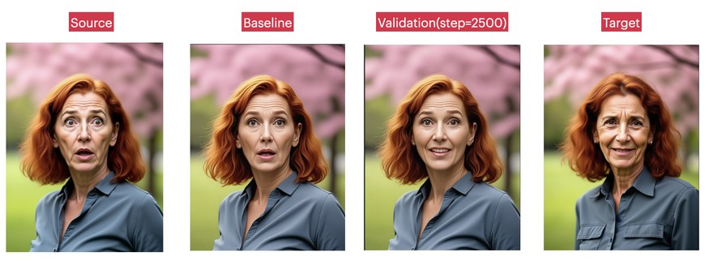
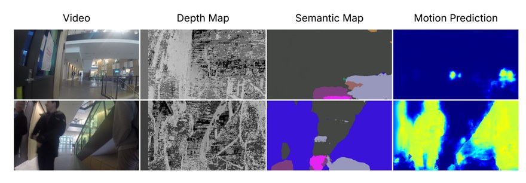

Projects
Selected research and engineering projects.

Facial Emotion Editing via Multi-modal Diffusion
A multi-modal emotion-editing architecture for identity-preserving, per-subject expression edits on multi-face images. Uses MLLM-based reference conditioning and a FLUX2-driven synthetic data pipeline to scale fine-grained emotion supervision. Ongoing research project.

Stereo Depth + Semantic Fusion for Scene Understanding
A modular U-Net perception framework that infers pixel-level motion probability by fusing stereo-derived depth with semantic segmentation — no LiDAR, no flow networks. Implements a hand-crafted Bayesian fusion of depth-change evidence and semantic priors, evaluated on DrivingStereo with real ECSC calibration.